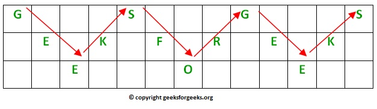

Encryption Technique
In a transposition cipher, the order of the alphabets is re-arranged to obtain the cipher-text.
- In the rail fence cipher, the plain-text is written downwards and diagonally on successive rails of an imaginary fence.
- When we reach the bottom rail, we traverse upwards moving diagonally; after reaching the top rail, the direction is changed again. Thus the alphabets of the message are written in a zig-zag manner.
- After each alphabet has been written, the individual rows are combined to obtain the cipher-text.
For example, if the message is "GeeksforGeeks" and the number of rails = 3, then the cipher is prepared as:
